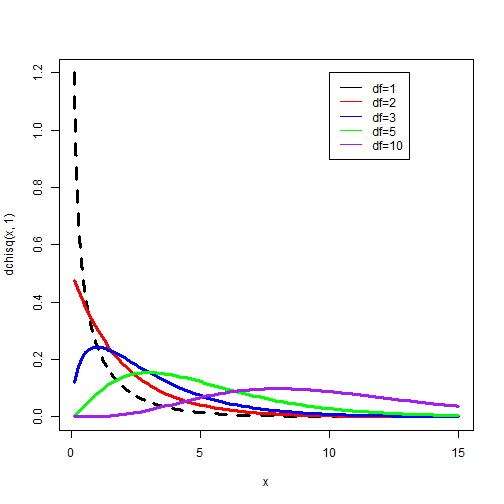

Categorical Data
Adam J Sullivan
Assistant Professor of Biostatistics
Brown University
Categorical Data Analysis
Categorical Data Analysis
- So far we have focused primarily on continuous outcomes and how to compare them.
- Many times we have categorical data that we wish to compare.
- We have seen this with a proportion test but there are other methods to doing this.
Chi-Square Distribution
- This is a crucial distribution for working with categorical data and many other things.
- This distribution is specifically from the standard normal distribution.
Chi-Square Distribution
- Consider \(V\), where
\[V=Z_1^2 + \cdots + Z_n^2\]
- Where
- \(Z_i\) is a standard normal distribution.
- Each \(Z_i\) are independent from each other.
Then we say that \(V \sim \chi^2_n\)
Chi Square Distribution

Some Data
- We have some data from a study done in 1894-96 on Cholera Innoculations in Calcutta, India.
- Of the 818 exposed subjects, 279 receive an innoculation and 539 did not.
| Infected | Not Infected | ||
|---|---|---|---|
| Innoculated | 3 | 276 | 279 |
| Not Innoculated | 66 | 473 | 539 |
| 69 | 749 | 818 |
What can we do?
- We could look at proportions:
\[Pr(\text{Probability of Cholera}| \text{Innoculated}) = \dfrac{3}{279}= 0.011\] \[Pr(\text{Probability of Cholera}| \text{Not Innoculated}) = \dfrac{66}{539}= 0.122\]
- How do we decide?
Testing Proportions
1.Test \(H_0: p_1=p_2 \text{ vs } H_1: p_1\ne p_2\) 2. Test \(H_0: OR=1 \text{ vs } H_1: OR\ne 1\) 3. Pearson \(\chi^2\) Test
Pearson Chi-square Test
\[X = \sum_{i,j} \dfrac{\left(O_{ij} - E_{ij} \right)^2}{E_{ij}}\]
- Where
- \(O_{ij}\): observed count in cell \(i,j\)
- \(E_{ij}\): expected count in cell \(i,j\)
- \(x \sim \chi^2(df=(r-1)(c-1))\)
Our Data
M <- as.table(rbind(c(3, 276), c(66, 473)))
dimnames(M) <- list(Treatment = c("Innoculated", "Not Innoculated"),
Status = c("Infected", "Not Infected"))
M
## Status
## Treatment Infected Not Infected
## Innoculated 3 276
## Not Innoculated 66 473
Chi Square Test
chisq.test(M, correct=FALSE)
##
## Pearson's Chi-squared test
##
## data: M
## X-squared = 29.696, df = 1, p-value = 5.055e-08
Attrition Data
attr_pop <- rsample::attrition
Gender vs Attrition
table(attr_pop$Gender, attr_pop$Attrition)
##
## No Yes
## Female 501 87
## Male 732 150
Chi Square Test
T <- table(attr_pop$Gender, attr_pop$Attrition)
chisq.test(T, correct=F)
##
## Pearson's Chi-squared test
##
## data: T
## X-squared = 1.2752, df = 1, p-value = 0.2588
Gender vs Performance Rating
--- .class #id
Gender vs Performance Rating
table(attr_pop$Gender, attr_pop$PerformanceRating)
##
## Low Good Excellent Outstanding
## Female 0 0 494 94
## Male 0 0 750 132
Gender vs Performance Rating
T <- table(attr_pop$Gender, attr_pop$PerformanceRating)
chisq.test(T, correct=F)
##
## Pearson's Chi-squared test
##
## data: T
## X-squared = NaN, df = 3, p-value = NA
Gender vs Performance Rating
attr_pop2 <- attr_pop %>%
filter(PerformanceRating=="Excellent" | PerformanceRating == "Outstanding")
attr_pop2 <- droplevels(attr_pop2)
T <- table(attr_pop2$Gender, attr_pop2$PerformanceRating)
chisq.test(T, correct=F)
##
## Pearson's Chi-squared test
##
## data: T
## X-squared = 0.28235, df = 1, p-value = 0.5952
Work Life Balance and Attrition
Work Life Balance and Attrition
table(attr_pop$WorkLifeBalance, attr_pop$Attrition)
##
## No Yes
## Bad 55 25
## Good 286 58
## Better 766 127
## Best 126 27
Work Life Balance and Attrition
T <- table(attr_pop$WorkLifeBalance, attr_pop$Attrition)
chisq.test(T, correct=F)
##
## Pearson's Chi-squared test
##
## data: T
## X-squared = 16.325, df = 3, p-value = 0.0009726
Work Life Balance and Attrition
table(attr_pop$WorkLifeBalance, attr_pop$Attrition) %>%
prop.table() %>%
round(., 2)
Work Life Balance and Attrition
##
## No Yes
## Bad 0.04 0.02
## Good 0.19 0.04
## Better 0.52 0.09
## Best 0.09 0.02
Work Life Balance and Attrition
attr_pop %>%
count(WorkLifeBalance, Attrition) %>%
mutate(freq = n/sum(n)) %>%
select(-n) %>%
spread(WorkLifeBalance, freq)
## # A tibble: 2 x 5
## Attrition Bad Good Better Best
## <fct> <dbl> <dbl> <dbl> <dbl>
## 1 No 0.0374 0.195 0.521 0.0857
## 2 Yes 0.0170 0.0395 0.0864 0.0184
Work Life Balance and Attrition
attr_pop %>%
count(WorkLifeBalance, Attrition) %>%
mutate(freq = n/sum(n)) %>%
select(-n) %>%
spread(Attrition, freq)
## # A tibble: 4 x 3
## WorkLifeBalance No Yes
## <ord> <dbl> <dbl>
## 1 Bad 0.0374 0.0170
## 2 Good 0.195 0.0395
## 3 Better 0.521 0.0864
## 4 Best 0.0857 0.0184
Work Life Balance and Attrition
attr_pop %>%
count( Attrition, WorkLifeBalance) %>%
mutate(freq = n/sum(n)) %>%
select(-n) %>%
spread(Attrition, freq)
## # A tibble: 4 x 3
## WorkLifeBalance No Yes
## <ord> <dbl> <dbl>
## 1 Bad 0.0374 0.0170
## 2 Good 0.195 0.0395
## 3 Better 0.521 0.0864
## 4 Best 0.0857 0.0184
ANOVA
Recap on our progress:
- Up to this point we have seen basic statistical features:
- mean
- variance
- standard deviation
- median
- min
- max
- We have also considered a t-test in which we compare a continuous variable across 2 groups.
Enter ANOVA
- What if we need to compare more than 2 groups?
- Lets say we have the groups: A, B and C
- We could compare:
- A vs B
- A vs C
- B vs C
- What are some issues with this?
Enter ANOVA
- Multiple Testing issues
- Each time you perform this test on the same data, you use a type 1 error of 0.05, the more tests you perfrom the more this error increases.
- If you need to do multiple testing you then have to do a p-value correction.
- Could be a waste of time if all the groups are the same.
- More computational time if there is no difference.
Enter ANOVA
- We then can consider ANOVA: ANalysis Of VAriance
- ANOVA asks a very basic question:
- Where is the variability coming from?
- Is it coming from within each group?
- Is it coming between the groups?
- Where is the variability coming from?
- The hypothesis test we perform is
\[ H_0:\;\; \mu_1 = \mu_2 = \cdots = \mu_k\] \[ H_1:\;\; \text{At least one group is different}\]
What is our test then?
- We now move to testing with the \(F\) distribution rather than the \(t\)-distribution:
- We use the following test statistic: \[ k = \dfrac{\text{Measure of Between-Group Variability}}{\text{Measure of Within-Group Variability}}\]
- How do we calculate these variabilities?
The math
- We calculate the following values:
- Between Sum of Squares \[SS_B = \sum_{i=1}^k n_i\left(\bar{y}_i - \bar{y}\right)^2\]
- Within Sum of Squares \[SS_W = \sum_{i=1}^k \sum_{j=1}^{n_i} \left(y_{ij} - \bar{y}_i\right)^2\]
- Total Sums of Squares \[SS = SS_B + SS_W\]
- In all of these: \(i\) is the index for \(k\) groups and \(j\) is the index for the \(n_i\) observations in each group.
ANOVA Variances
- This is where the analysis of variances comes in, we are comparing the variances:
- Between group variability
- Within group variability
- Traditionally this test was performed using the following table:
ANOVA Table
| DF | Sum Sq. | Mean Sq | F value | Pr(>F) | |
|---|---|---|---|---|---|
| Between (treatment) | \(k-1\) | \(SS_{B}\) | \(MS_{B} = \dfrac{SS_B}{k-1}\) | \(\frac{MS_{B}}{MS_{W}}\) | p-value |
| Within (error) | \(N-k\) | \(SS_{W}\) | \(MS_{W} = \dfrac{SS_W}{N-k}\) | ||
| Total | \(N-1\) | \(SS_{T}\) |
Calculating ANOVA
- In a traditional class you would be made to do this by hand
- We won't do this:
- I hate doing it.
- you never do this in real life.
- WE HAVE R!
- We will focus on performing this in R.
The Data for Class
- We will consider the data behind the story: "Comic Books are Still Made By Men, For Men and About Men".
- This data is part of the
fivethirtyeightpackage: - To explore the variable names run the following code:
library(fivethirtyeight)
?comic_characters
Difference in Appearances by Gender
- Lets consider if the number of appearances of characters is different depending on the gender of the character.
- We could first graph this:
library(ggplot2)
ggplot(comic_characters, aes(x = sex, y = appearances)) +
geom_point() +
geom_point(stat = "summary", fun.y = "mean", color = "red", size = 3)
Difference in Appearances by Gender
Table of Gender
- We can see that this is hard to read, we can see what the groups look like by counting them
library(tidyverse)
comic_characters %>%
group_by(sex) %>%
tally(sort = TRUE)
Table of Gender
- We can see that this is hard to read, we can see what the groups look like by counting them
## # A tibble: 7 x 2
## sex n
## <chr> <int>
## 1 Male Characters 16421
## 2 Female Characters 5804
## 3 <NA> 979
## 4 Agender Characters 45
## 5 Genderless Characters 20
## 6 Genderfluid Characters 2
## 7 Transgender Characters 1
Data Cleaning
- We can make the names smaller
comic <- comic_characters %>%
mutate(sex = fct_recode(sex,
"Agender" = "Agender Characters",
"Female" = "Female Characters",
"Genderfluid" = "Genderfluid Characters",
"Genderless" = "Genderless Characters",
"Male" = "Male Characters",
"Transgender" = "Transgender Characters"
))
Data Cleaning
Cleaning Data
- we can see that we do not have many people in categories asside from "Male" and "Female"
- This can be a problem with many statistical tests so we can combine categories
comic <- comic_characters %>%
mutate(sex = fct_recode(sex,
"Non-Binary" = "Agender Characters",
"Female" = "Female Characters",
"Non-Binary" = "Genderfluid Characters",
"Non-Binary" = "Genderless Characters",
"Male" = "Male Characters",
"Non-Binary" = "Transgender Characters"
))
Cleaning Data
- We can also see that we have a lot of values that seem to be very high compared to the mean.
- In this case many times we pull in the extreme values with a log transform
- We can do this with mutate
comic <- comic %>%
mutate(log_app = log(appearances))
Boxplots
- we can then try looking at boxplots
Finally ANOVA
- these look a little better now that we have done a log transform
- We can code an ANOVA in r with the following:
aov(log_app~sex, data=comic)
## Call:
## aov(formula = log_app ~ sex, data = comic)
##
## Terms:
## sex Residuals
## Sum of Squares 296.09 40225.14
## Deg. of Freedom 2 20966
##
## Residual standard error: 1.385132
## Estimated effects may be unbalanced
## 2303 observations deleted due to missingness
What can we do to get more information
- Many things in R are stored in objects called lists.
- Lists contain a large amount of objects
my_anova <- aov(log_app~sex, data=comic)
names(my_anova)
## [1] "coefficients" "residuals" "effects" "rank"
## [5] "fitted.values" "assign" "qr" "df.residual"
## [9] "na.action" "contrasts" "xlevels" "call"
## [13] "terms" "model"
Summary
- The summary function works with anova and many other functions to give us a basic summary
summary(my_anova)
## Df Sum Sq Mean Sq F value Pr(>F)
## sex 2 296 148.05 77.16 <2e-16 ***
## Residuals 20966 40225 1.92
## ---
## Signif. codes: 0 '***' 0.001 '**' 0.01 '*' 0.05 '.' 0.1 ' ' 1
## 2303 observations deleted due to missingness
What were we testing again?
- Recall our hypothesis: \[ H_0:\;\; \mu_1 = \mu_2 = \cdots = \mu_k\] \[ H_1:\;\; \text{At least one group is different}\]
- What can we say about these groups?
What is Next?
- Now that we know there is a difference, we need to find out what difference that is.
- This does leave us with a multiple testing problem.
- Previously it was mentioned that performing multiple hypothesis tests we have problems with the type 1 error.
- Type 1 error is the error of making a mistake by rejecting the null hypothesis when you shouldn't have.
- This means that if we perform 20 studies we can assume that we made a mistake on 5% of them or 1 of them will be significant and lead to rejecting the null hypothesis.
What about Multiple Testing
- When we perform 20 tests on the same data what we have is: \[\begin{align*} \Pr(\text{At least 1 Significant Result}) &= 1 - \Pr(\text{No Significant Results})\\ &= 1 - \left( 1-0.05\right)^{20}\\ & = 0.6415141 \end{align*}\]
- We call this the Family Wise Error Rate (FWER)
- So now we have around 13 tests that we would be making a mistake on.
- On Friday, this will be covered more thoroughly.
What Type of Multiple Tests for ANOVA
- We need to control the FWER so that \(\text{FWER}\le0.05\).
- There are various methods out there:
- Bonferroni Method
- Tukey HSD
- Holm, Hommel, Dunnett, Šidák , ...
The Bonferroni Correction
- Consider the problem of testing \(n\) different tests. - We can do the Bonferroni in 2 different ways:
- Adjust the significance level \[ \alpha^* = \dfrac{\alpha}{n}\]
- Bonferroni Correct p-values \[\text{min}\left[2\times\binom{k}{2}\times \Pr\left(\mid t\mid < t_{n-k}\right),1\right]\]
The Bonferroni Correction
- If we have \(n=20\) then i we wish to control the FWER at \(\alpha=0.05\), then we have \[\alpha^* = \dfrac{\alpha}{n}= \dfrac{0.05}{20}=0.0025\]
- What does this mean for the FWER: \[\begin{align*} \Pr(\text{At least 1 Significant Result}) &= 1 - \Pr(\text{No Significant Results})\\ &= 1 - \left( 1-0.0025\right)^{20}\\ & = 0.04883012 \end{align*}\]
Bonferonni in R
- We can perform multiple t-tests in R using:
pairwise.t.test(x,g,p.adjust.method,...) - Where
xis the response vectorgis the grouping factorp.adjust.methodis p-value adjustment...Others you can see in r
Bonferonni in R
- Perform multiple tests
attach(comic)
pairwise.t.test(log_app,sex, p.adjust="none")
detach()
##
## Pairwise comparisons using t tests with pooled SD
##
## data: log_app and sex
##
## Non-Binary Female
## Female 0.1283 -
## Male 0.0023 <2e-16
##
## P value adjustment method: none
- Remember to compare vs \(\alpha=0.05/3\approx0.017\)
Bonferonni in R
- Or correct for Bonferroni in the p-values
attach(comic)
pairwise.t.test(log_app,sex, p.adjust="bonferroni")
detach()
##
## Pairwise comparisons using t tests with pooled SD
##
## data: log_app and sex
##
## Non-Binary Female
## Female 0.3850 -
## Male 0.0069 <2e-16
##
## P value adjustment method: bonferroni
Tukey HSD Test
- This is called the Tuker Honest Significant Difference (HSD) test.
- This creates a set of confidence intervals and adjust p-values based on the studentized range distribution.
- Tukey's is usually preferred in ANOVA as it is less conservative that Bonferroni and in many cases yields and exact correction.
Tukey HSD in R
TukeyHSD(my_anova, conf.level=0.95)
## Tukey multiple comparisons of means
## 95% family-wise confidence level
##
## Fit: aov(formula = log_app ~ sex, data = comic)
##
## $sex
## diff lwr upr p adj
## Female-Non-Binary -0.2648371 -0.6730209 0.1433466 0.2811377
## Male-Non-Binary -0.5292183 -0.9358797 -0.1225569 0.0064760
## Male-Female -0.2643812 -0.3154401 -0.2133222 0.0000000
Results
- What can we confirm from these tests?
Assumptions of ANOVA
- There are assumptions made for every statistical method.
- The assumptions of ANOVA are:
- Independent groups
- Homogeneity of Variances
- Normality of residuals